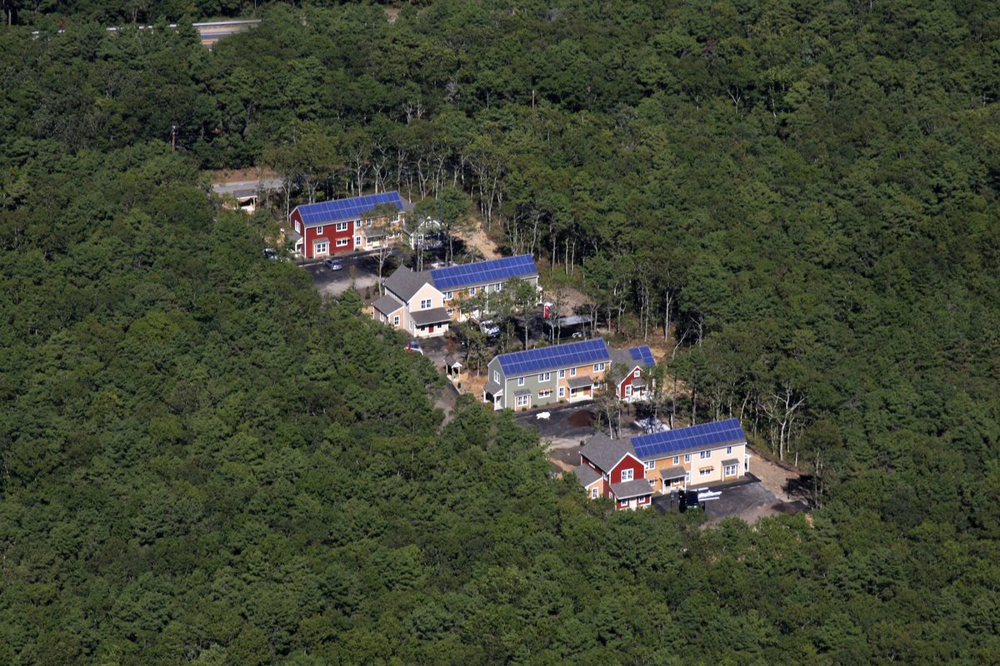

미국 조지아 애선스 해비타트, 저렴주택 단지 모든 집에 지붕 태양광·배터리…주민들이 첫 집에 패널 함께 올려

11에이커 마이카스 크리크에 단독주택 42채·초소형 주택 11채·방 2개 주택 15채…첫 15채는 위탁가정 나온 청년 주거로, 애선스 가구 57%가 공공요금 부담 호소
미국 조지아주 애선스의 비영리 주택단체 애선스 지역 해비타트(Athens Area Habitat for Humanity)가 시내 가까이 짓고 있는 저렴주택 단지 마이카스 크리크(Micah's Creek)의 모든 집에 지붕 태양광과 배터리 저장장치를 단다. 해비타트는 24일 오전 이곳에서 공사 진척을 기념하는 '솔라 반 레이징(이웃이 함께 짓는 행사)'을 열었고, 연설이 끝난 뒤 주민과 참석자들이 줄을 서서 단지의 첫 태양광 주택으로 패널을 함께 날랐다. 11에이커 부지에는 단독주택 42채와 초소형 주택 11채, 방 2개짜리 주택 15채가 들어서며, 모든 집은 고효율 단열 콘크리트로 짓는다. 방 2개 주택 첫 15채는 지역 비영리단체 리디아스 플레이스(Lydia's Place)가 빌려 위탁가정 보호가 끝난 뒤 주거가 불안한 17~24세 청년에게 싼 임대료로 내주고, 나머지 집은 해비타트가 다 지어지는 대로 배정한다. 리디아스 플레이스의 다이앤 브랜틀리 사무국장은 "아낄 수 있는 한 푼 한 푼이 이 청년들에게 큰 도움이 된다"고 말했다. 애선스 웰빙 프로젝트 조사에서는 2025년 애선스 가구의 57%가 공공요금을 내기 어렵다고 답했으며, 이날 행사에는 켈리 거츠 시장과 덱스터 피셔 시장 당선인이 함께했고 조지아주 하원의원이자 해비타트 사무총장인 스펜서 프라이는 첫 집 장만 나이를 40대에서 20대 중반으로 낮추는 것이 목표라고 밝혔다.
시민에너지 관점
애선스 가구의 57%가 공공요금을 버거워하는 상황에서 저렴주택 지붕마다 태양광과 배터리를 다는 것은 에너지 빈곤을 일회성 요금 지원이 아니라 설비로 풀겠다는 선택이다. 설치비가 비싸 취약계층 주택에는 과하다는 우려가 있지만, 비영리 주택단체와 지역 단체, 주민이 함께 짓고 운영하면 비용을 나눠 지고 줄어든 전기요금은 고스란히 입주자 몫이 된다. 이 단지 태양광의 소유 구조는 알려지지 않았으나, 설비의 주인이 입주자와 지역 공동체여야 절감과 수익이 바깥으로 새지 않는다. 우리 공공임대주택과 햇빛소득마을도 에너지 취약계층의 몫을 먼저 정하고 사회연대경제 조직이 운영을 맡는 길을 제도로 열어야 한다.
출처: The Red & Black 2026-10-24 Prisha Dev 원문 보기
米ジョージア州アセンズのハビタット、手頃な価格の住宅団地の全戸に屋根置き太陽光・蓄電池…住民らが最初の家にパネルを一緒に運ぶ
11エーカーのマイカズ・クリークに戸建て42戸・タイニーハウス11戸・2寝室住宅15戸…最初の15戸は里親家庭を離れた若者の住まいに、アセンズの57%の世帯が公共料金の負担を訴え
米ジョージア州アセンズの非営利住宅団体アセンズ地域ハビタット・フォー・ヒューマニティ（Athens Area Habitat for Humanity）は、中心街の近くに建設中の手頃な価格の住宅団地マイカズ・クリーク（Micah's Creek）の全戸に、屋根置き太陽光パネルと蓄電池を設置する。同団体は24日午前、工事の進捗を祝う「ソーラー・バーン・レイジング（隣人が力を合わせて建てる催し）」をここで開き、あいさつの後、住民と参加者が列をつくって団地で最初の太陽光住宅へパネルを一緒に運んだ。11エーカーの敷地には戸建て住宅42戸、タイニーハウス11戸、2寝室住宅15戸が建ち、すべての家は高効率の断熱コンクリートで造られる。2寝室住宅の最初の15戸は地元の非営利団体リディアズ・プレイス（Lydia's Place）が借り受け、里親家庭での養育を終えて住まいが不安定な17〜24歳の若者に安い家賃で提供し、残りの家はハビタットが完成し次第割り当てる。リディアズ・プレイスのダイアン・ブラントリー事務局長は「節約できる1セント1セントが若者たちにとって大きな助けになる」と語った。アセンズ・ウェルビーイング・プロジェクトの調査では2025年にアセンズの世帯の57%が公共料金の支払いが難しいと答えており、この日の催しにはケリー・ガーツ市長とデクスター・フィッシャー次期市長が出席し、ジョージア州下院議員でハビタットの事務局長を務めるスペンサー・フライ氏は、初めて家を買う年齢を40代から20代半ばに引き下げることが目標だと述べた。
市民エネルギーの視点
アセンズの世帯の57%が公共料金に苦しむ中で、手頃な価格の住宅の屋根ごとに太陽光と蓄電池を付けることは、エネルギー貧困を一時的な料金支援ではなく設備で解決しようとする選択だ。設置費が高く低所得者向け住宅には過剰だとの懸念もあるが、非営利の住宅団体と地域団体、住民が一緒に建てて運営すれば費用を分かち合え、下がった電気料金はそのまま入居者のものになる。この団地の太陽光の所有形態は明らかではないが、設備の持ち主が入居者と地域コミュニティであってこそ、節約分と収益が外に漏れない。韓国の公共賃貸住宅や「日差し所得村」も、エネルギー弱者の取り分を先に決め、社会連帯経済の組織が運営を担える道を制度として開くべきだ。
出典: The Red & Black 2026-10-24 Prisha Dev 原文を読む
美国佐治亚州雅典市仁人家园为可负担住房社区每户装上屋顶光伏和电池…居民合力把光伏板送上第一栋房子
占地11英亩的Micah's Creek将建42栋独栋住宅、11栋微型住宅和15栋两居室住宅…首批15栋供离开寄养家庭的青年居住，雅典市57%的家庭称难以负担公用事业费
美国佐治亚州雅典市的非营利住房组织雅典地区仁人家园（Athens Area Habitat for Humanity）将为其在市中心附近兴建的可负担住房社区Micah's Creek的每一户安装屋顶光伏板和电池储能系统。该组织24日上午在当地举办庆祝工程进展的"太阳能共建日"（solar barn raising，邻里合力建房的活动），致辞结束后，居民和参加者排队把光伏板一起搬上社区第一栋太阳能住宅。11英亩的用地上将建起42栋独栋住宅、11栋微型住宅和15栋两居室住宅，所有房屋都采用高效隔热混凝土建造。首批15栋两居室住宅由当地非营利组织Lydia's Place租用，以低廉租金提供给结束寄养、住房不稳定的17至24岁青年，其余房屋则由仁人家园在建成后陆续分配。Lydia's Place执行主任Diane Brantley说："他们能省下的每一分钱都对他们大有帮助。"雅典健康福祉项目（Athens Wellbeing Project）的调查显示，2025年雅典市57%的家庭表示难以支付公用事业费；当天的活动中，市长Kelly Girtz和候任市长Dexter Fisher到场，佐治亚州众议员、仁人家园执行主任Spencer Frye表示，他的目标是把首次购房年龄从40多岁降到25岁左右。
市民能源视角
在雅典市57%的家庭苦于公用事业费的情况下，为可负担住房逐户安装光伏和电池，是用设备而非一次性电费补贴来解决能源贫困的选择。有人担心安装成本高，对低收入住房来说过于奢侈，但由非营利住房组织、地方团体和居民共同建设和运营，就能分摊成本，节省下来的电费也会完整地归入住户。这个社区光伏设备的所有权结构尚不清楚，但只有设备的主人是住户和地方社区，节省的费用和收益才不会外流。韩国的公共租赁住房和"阳光收入村"也应先确定能源弱势群体的份额，并通过制度为社会连带经济组织承担运营开辟道路。
来源: The Red & Black 2026-10-24 Prisha Dev 查看原文
Athens, Georgia, Habitat puts rooftop solar and batteries on every home in an affordable neighborhood as residents help carry panels to the first house
The 11-acre Micah's Creek will have 42 single-family homes, 11 tiny homes and 15 two-bedroom homes; the first 15 will house young adults leaving foster care, as 57% of Athens households report trouble paying utility bills
Athens Area Habitat for Humanity, a nonprofit housing group in Athens, Georgia, is fitting every home in Micah's Creek, the affordable neighborhood it is building near downtown, with rooftop solar panels and battery storage. On the morning of the 24th the group held a solar barn raising there to mark construction progress, and after the speeches residents and attendees lined up to carry panels together to the neighborhood's first solar house. The 11-acre site will hold 42 single-family homes, 11 tiny homes and 15 two-bedroom homes, all built with high-efficiency insulating concrete. Local nonprofit Lydia's Place will lease the first 15 two-bedroom homes to offer low rent to young people aged 17 to 24 who have aged out of foster care and face housing insecurity, while Habitat will allocate the remaining homes as they are completed. Diane Brantley, executive director of Lydia's Place, said every dime the young residents can save is a great help to them. A study by the Athens Wellbeing Project found that 57% of Athens households reported difficulty paying utility bills in 2025; Mayor Kelly Girtz and Mayor-elect Dexter Fisher attended the event, and Georgia state Rep. Spencer Frye, who is also Habitat's executive director, said one of his main goals is to lower the age of first-time home buyers from the 40s to the mid-20s.
Citizen Energy View
With 57% of Athens households struggling with utility bills, putting solar and batteries on the roof of every affordable home is a choice to tackle energy poverty with equipment rather than one-off bill assistance. Some will say the installation cost is too much for low-income housing, but when a nonprofit builder, local groups and residents build and run it together, the cost is shared and every dollar saved on power stays with the residents. The ownership structure of this neighborhood's solar has not been disclosed, yet only when residents and the local community own the equipment do the savings and income stay at home. Korea's public rental housing and sunlight income villages should likewise set aside a share for energy-vulnerable households first and open a legal path for social and solidarity economy organisations to run them.
Source: The Red & Black 2026-10-24 Prisha Dev Read the original